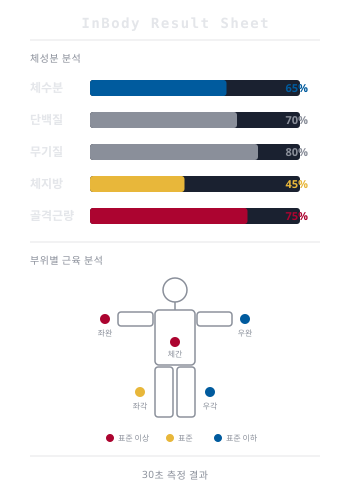

여러분의 몸은 60%가 물입니다.
저는 고려대에서 바이오의공학을 전공하고, 26살에 인도 뭄바이로 떠났습니다. 지금은 InBody에서 글로벌 사업을 총괄하고 있습니다.
Before InBody
물탱크에 들어가서 숨을 참아야 했습니다. 완전히 잠수한 채로 3회 반복. 연구실에서만 가능했죠.
캘리퍼로 피부를 집어서 지방 두께를 쟀습니다. 누가 재느냐에 따라 결과가 달랐습니다.
누워서 전극 4개를 붙이고, 50kHz 하나로 측정했습니다. 자세가 바뀌면 값도 바뀌었죠.
물속에 들어가고, 피부를 집고,
누워서 측정해야 했던 시대.
InBody는 이걸
발판 위에 30초 서 있기로 바꿨습니다.

30초의 결과
체수분, 단백질, 무기질, 체지방, 골격근량... 부위별로 전부 나옵니다. 30초 서 있었을 뿐인데요.
전 세계 8,000편 이상의 학술 논문에서 기준 장비로 사용됩니다.
재미있는 건, InBody의 첫 고객이 대학병원이 아니라 한의원이었다는 겁니다. 녹용을 먹는 환자의 근육량이 실제로 늘어나는 걸 InBody로 확인할 수 있었거든요.
여러분의 전공이 이 기계 안에 있습니다
세포생물학 시간에 배운 인지질 이중층, 기억나시죠? 그게 이 기계의 핵심 원리입니다. 저주파 전류는 세포막에 막혀서 세포 바깥만 흐르고, 고주파는 세포막을 관통해서 세포 안까지 들어갑니다.
저도 바이오의공학부에서 이 원리를 배웠습니다. 그때는 이게 직업이 될 줄 몰랐죠.
왜 다른 기계는 이걸 못 할까?
다른 BIA 기계들은 50kHz 하나만 씁니다. InBody는 8개 주파수를 씁니다. 왜냐하면 주파수마다 세포막을 통과하는 정도가 다르기 때문입니다.
세계 최초 3MHz 적용 (2020)
양손·양발 8개 접점으로 5개 부위를 독립 측정합니다. 재현성 99%. 누가, 언제 재도 같은 결과가 나옵니다.
1996년 창업자가 세계 최초 개발
나이, 성별, 인종 같은 추정값을 쓰지 않습니다. 오직 임피던스 측정값만으로 결과를 냅니다.
DXA 대비 98% 상관관계 (Mayo Clinic)
Phase Angle = 세포막 무결성 지표
암환자 예후 예측. 투석환자 영양상태 판단. 노인 근감소증 진단.
여러분이 배우는 세포생물학이 실제로 사람을 살리는 현장이 여기 있습니다.
Phase Angle < 5° → 암환자 사망률 유의미 상승
Phase Angle 모니터링 → 투석환자 영양 중재 시점 결정
세포막이 무너지면 숫자가 먼저 알려줍니다.
코로나 환자는 하루에 근육 500g을 잃습니다. 이걸 실시간으로 모니터링할 수 있는 기계가 병상 옆에 있다면?
한 분야만 잘해서는 절대 만들 수 없습니다.
생체 이해
전자공학
생산 설비
글로벌 세일즈
끊임없는 개선
1996년, 전세금 5,000만원과 직원 4명으로 삼성동 지하 창고에서 시작했습니다.
첫 해 매출 1억원. 지금은 2,339억원.
과제업무제도 — 신입사원도 본인이 기획한 프로젝트를 수행합니다. CEO가 직접 멘토링합니다. 성과에 따라 최대 1억원 이상 보상. 우리 회장님의 목표는 '환갑 전에 CEO 10명을 만드는 것'입니다.
천안공장에서는 한 사람이 한 대를 처음부터 끝까지 완성합니다. 장인제도. 불량률 0.23%.
India Story — Scene 01
2016년 7월. 스물여섯이었습니다.
동료 한 명과 뭄바이 공항에 내렸습니다.
사무실도 없었습니다. 팀도 없었습니다. 고객도 없었습니다.
건물이 들어서기 전부터, 회사 설립 서류부터 직접 작성했습니다.
India Story — Scene 02
한 포지션을 채우는 데 다섯 번을 시도했습니다.
보낸 물건이 세관에서 40일 넘게 묶였습니다.
어느 날 물류 파트너가 연락이 끊겼습니다.
적합한 팀을 만드는 데만 6년이 걸렸습니다.
India Story — Scene 03
인도에서는 체성분 분석이라는 개념 자체가 없었습니다.
의사 한 명 한 명을 찾아가서, BIA가 뭔지부터 설명했습니다.
InBody Academy를 인도에 런칭했습니다.
거절당하고, 또 찾아가고. 결국 사람을 찾았습니다.
Video
India Story — Scene 04
2024년 상반기, 인도 메디컬 매출 100%+ 성장
꿈만 같았습니다.
함께 인도에 갔던 동료 김도성은 지금 35세에 InBody 멕시코법인 CEO입니다. 1년 만에 팀을 50명으로 키웠습니다. 인도에서 배운 것을 멕시코에서 재현하고 있습니다.
또 다른 동료 Jade Kim은 27세에 InBody 오세아니아 법인장이 되었습니다. 여러분과 비슷한 나이입니다.
Global Network

2025년 매출 2,339억원. 하루 6.4억원어치.
지금 이 순간에도 전 세계에서 누군가가 InBody 위에 서 있습니다.
Choose Your Path
연구가 좋다면 →
8,000+편 논문 지원, Phase Angle 연구, Mayo Clinic 협력. 석·박사 10명의 AI Lab.
세계를 누비고 싶다면 →
14개국 법인. 1~2년 훈련 후 해외 사업 수행. 주거·항공 지원.
데이터가 좋다면 →
2억+ 체성분 빅데이터 분석. 개인 맞춤 건강관리 알고리즘 개발.
제품을 만들고 싶다면 →
μA 정밀 전류 회로 설계부터 3D CAD 구조 설계까지. 천안공장에서 직접 제조.
InBody Startup Academy — 대학생 8명 선발, 개발비·월급·CES 항공편 전액 지원. CEO가 직접 멘토링. 2025년 라스베이거스 CES에서 'InBody AI Scale'을 전시했습니다.
연 10대 팔던 시절에 입사한 직원이 19년 만에 CEO가 되었습니다. 어디서 시작하든, 어디까지 갈 수 있는지는 본인이 정합니다.
마지막으로
우리 회장님은 이렇게 말합니다. '돈 벌려고 창업하지는 말라. 조급한 토끼보다 꾸준한 거북이가 낫다.'
저도 대학생 때 이런 자리에 앉아 있었습니다. 스티브잡스 때는 인문학, 지금은 AI. 유행은 바뀝니다. 생물이 재미있으면, 그게 여러분의 중심입니다. 주변에 가져올 수 있는 것들을 다 활용해서 만들어가세요.
인바디 글로벌 인재 육성 프로그램
inbodyrecruit.com
Q&A — 무엇이든 물어보세요